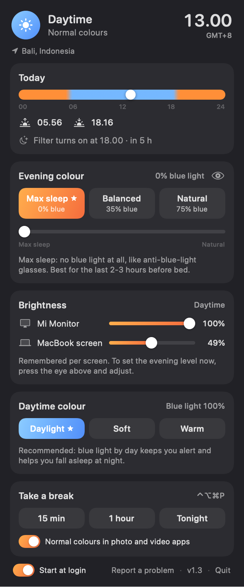
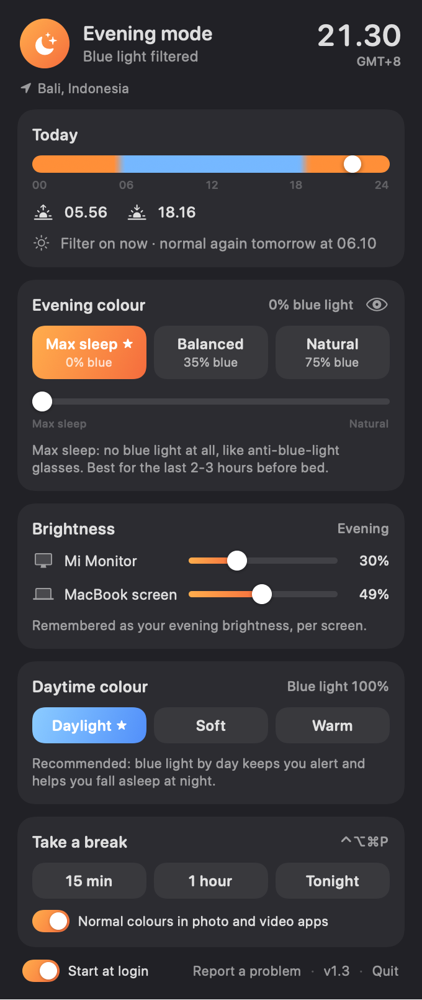

"Sunscreen" was blocked to protect your Mac.
Open AnywaySunscreen
Your Mac follows the sun. Normal during the day. When the sun sets, the blue light disappears from your screen, all by itself.
You're on your phone. Open this link on your Mac to install.
What it looks like
The same screen, day and evening. In the evening there is zero blue light, like wearing blue-light glasses.
Install in 1 minute
Three steps. No tech skills needed, you just copy one line.
Open Terminal
Click the button. Or press ⌘ and Space together, type Terminal and press Enter.
Terminal opens with a short help text. Press ⌘N for a fresh window, then ⌘V and Enter. The install line is already copied for you. If your browser asks, click Allow.
Copy and paste
Click Copy. Click in the Terminal window, press ⌘V, then Enter.
curl -fsSL https://rmmarketingmcc.github.io/sunscreen/install.sh | bash
Done
After a few seconds a little sun appears at the top right. It starts by itself every time you turn on your Mac.
How to use it
Click the sun (or moon) in the menu bar to open this panel.


- See your day. Where you are, the time, sunrise, sunset and when the filter turns on.
- Pick how much blue light. Max sleep means 0% blue light in the evening, like blue-light glasses. That's the recommendation. Slide towards Natural for more normal-looking colours. For daytime, Daylight is recommended: blue light by day keeps you alert and helps you sleep at night.
- Set brightness per screen. One slider for each screen, MacBook included. Sunscreen remembers what you pick in the daytime and in the evening, and switches between them with the sun.
- Need a break? Say for a movie or photo editing: press ⌃⌥⌘P (Ctrl, Option, Cmd and P). Press again to turn it back on. Or pick 15 min, 1 hour or tonight in the panel. In Photoshop, Lightroom, Final Cut and similar apps, colours go back to normal by themselves.
Rather download a file than use Terminal?
1. Download the file and open it. Drag Sunscreen onto the Applications folder.
Download Sunscreen
2. Open Sunscreen from Applications. Your Mac shows a warning because the app isn't from the App Store. That's normal. Click Done.
3. Open System Settings, choose Privacy & Security, scroll down and click Open Anyway. Enter your password. You only do this once.
Sunscreen vs. the others
Built from what people complain about in other apps. How it compares, based on each app's own website and user reports:
| Sunscreen | f.lux | Night Shift | Lunar | MonitorControl | |
|---|---|---|---|---|---|
| Price | Free | Free | Built into macOS | Free, Pro $23 | Free |
| 0% blue light in the evening | Yes | Yes | No | Not a colour app | Not a colour app |
| Follows sunset where you are | Yes | Yes | Yes | Pro, for brightness | No |
| Dims external monitors itself | Yes | No | No | Yes | Yes |
| Remembers day and evening brightness per screen | Yes | No | No | Pro, learns from you | No, by hand |
| Normal colours in photo and video apps | Automatic | Per app, by hand | No | - | - |
| Smooth fades on every change | Yes | Yes | Yes | - | - |
- f.lux pioneered all this and is still great. On Mac its last release came out in 2024.
- Night Shift needs nothing installed, but even at its warmest a fair amount of blue light gets through.
- Lunar and BetterDisplay are powerful for monitor brightness; their automatic modes and colour features cost money.
- MonitorControl is free and solid for monitor brightness, but doesn't change colours or follow the sun.
- Sunscreen is new. If something doesn't work on your setup, the report button sends it straight to the developer, and fixes arrive as automatic updates.
Based on each app's website, documentation and user reports, October 2026. Prices and features can change.
What's new
Every update, newest first. Sunscreen installs updates itself.
Questions
Will it work with my Mac and monitor?
Almost certainly. Any Mac with macOS 13 or newer. The evening colour works on every screen. Brightness works on the MacBook screen and directly on most external monitors (USB-C, DisplayPort and many HDMI connections). If a monitor doesn't allow that, Sunscreen dims it in software instead. Screens on a DisplayLink dock, Sidecar or AirPlay get the colour as an overlay.
Something not working?
Click the sun and choose Report a problem. Everything technical is filled in for you, you just press Submit (it needs a free GitHub account). If Sunscreen spots a problem itself, it puts a small dot on the sun and offers to report it.
My MacBook screen doesn't turn warm
On some new MacBooks (M5), macOS ignores colour filters on the built-in screen while Automatically adjust brightness is on. Turn it off in System Settings, Displays, and the evening colour shows up.
I also use f.lux or a similar app
Quit it. Two colour apps fight and make the screen flicker; Sunscreen notices and tells you. Night Shift is fine to leave on.
Is it safe?
The app only changes your screen's colours and brightness. Quit it and colours are back to normal instantly. The code is open on GitHub.
How do I get updates?
Automatically. When there's a new version, a small dot appears on the sun and the panel says Update available. Click Update and it installs itself in a few seconds.
How do I remove it?
Click the sun, choose Quit, and drag Sunscreen from Applications to the Trash. Colours go back to normal right away.